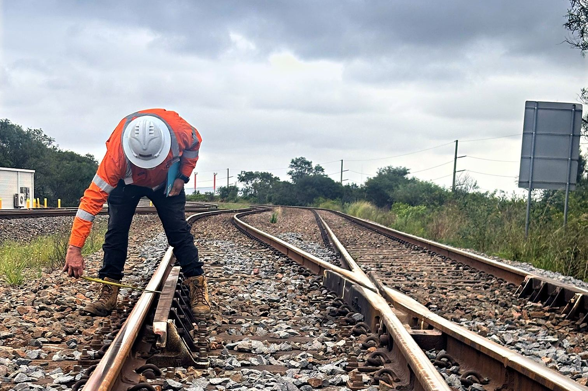
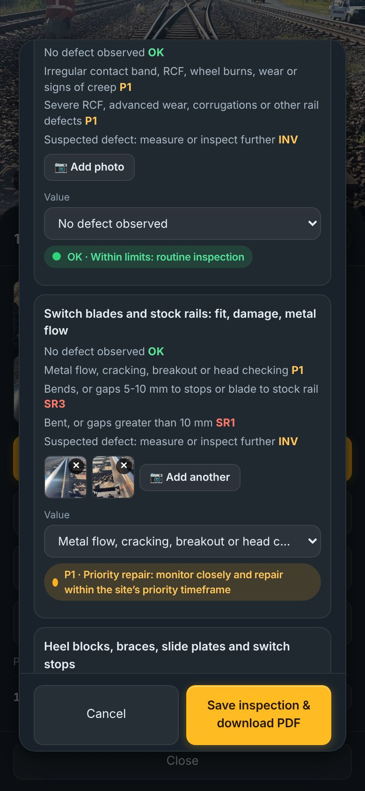
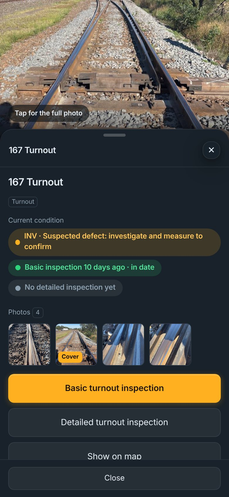

Turnout inspections
Every turnout is inspected against a set list of checks. Each result gets a code and photos, so you can see what needs doing first, and why.

Ten visual checks, due every 91 days:
50 checks, with measurements checked against the tolerances in your site standard, including:
Each check can carry its own photos, filed with the inspection. When something is found, you see exactly what the inspector saw.
The example here is from a real inspection on a working rail loop: the switch blade check, photographed and coded P1 for priority repair.

Each result gets one of twelve codes, from OK to closed. The speeds and repair timeframes behind them come from your site standard.
Each turnout’s latest condition, inspection dates and photos are a tap away on your map. Inspections print or save as a PDF for your records, auditors or contractors.

A basic inspection is ten visual checks covering the whole turnout. A detailed inspection is 50 checks, with measurements such as gauge, switch blade gaps and crossing wear checked against your site standard.
Yes. Every check can carry its own photos, so each finding comes with a picture of what was found.
Every result gets a code, from OK through planned and priority repairs and speed restrictions to closed, so the order of work is clear.
Yes. Each inspection prints or saves as a PDF, and the results stay on your map.
Send us your site’s location and how many turnouts it has, and we’ll quote it remotely, free.